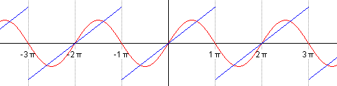
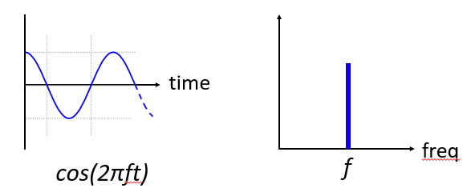
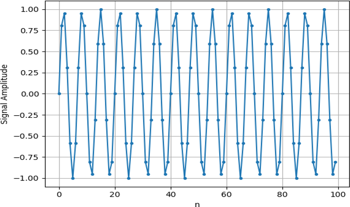

The Frequency Domain¶
One of the coolest side effects of learning about DSP and wireless communications is that you will also learn to think in the frequency domain. Most people’s experience with working in the frequency domain is limited to adjusting the bass/mid/treble knobs on a car’s audio system. Most people’s experience with viewing something in the frequency domain is limited to seeing an audio equalizer, such as this clip:
{kind=link}
In this chapter we cover what the frequency domain means, how to convert between time and frequency (plus what happens when we do so), and some interesting principles we will use later on. But by the end of this textbook you will be a master at working in the frequency domain, gauranteed!
Fourier Series¶
The basics of the frequency domain starts with understanding that any signal can be represented by a bunch of sine waves summed together. When we break a signal down into a bunch of sine waves, we call it a Fourier Series. Here is an example of a signal that is made up of only two sine waves:
{kind=link}
Here is another example; the red curve below shows an approximation of a sawtooth wave using up to five sine waves added together. We can see that it’s not a perfect reconstruction, it would take an infinite number of sine waves to reproduce this sawtooth wave due to the sharp transitions:
{kind=link}
Some signals require more sine waves than others, and some require an infinite amount of sine waves, although they can always be approximated with a limited number. Here is another example of a signal being broken down into a series of sine waves:

To understand how we can break down a signal into sine waves, we need to first review the three attributes of a sine wave, also known as sinusoid:
- Amplitude
- Phase
- Frequency
Amplitude indicates the “strength” of the wave, while phase is used to represent how the sine wave is shifted in time, anywhere from 0 to 360 degrees. Frequency is the number of waves per second, and is the inverse of period.
{kind=link}
At this point you may have realized that a “signal” is essentially just a function, usually represented “over time”. This means the period of a sinusoid is the amount of time, in seconds, for the wave to finish one cycle. Thus, the units of frequency, is 1/seconds, or Hz.
When we decompose a signal into a summation of sine waves, each one will have a certain amplitude, phase, and frequency. Each sine wave’s amplitude will tell us how strong that frequency existed in the original signal. Don’t worry too much about phase for now, other than realizing that the only difference between sin() and cos() is a phase shift (time shift).
Time-Frequency Pairs¶
Knowing that a signal can be broken down into sine waves is one thing, but now let’s actually plot signals in the frequency domain. In other words, instead of the x-axis being time, it will be frequency. For a given signal we can plot it in both time and frequency. Let’s look at some example signals, we will start with simple ones.
Here is what a sine wave, at frequency f, looks like in the time and frequency domain:
{kind=link}
The time domain should look very familiar, it’s simply an oscillating function, don’t worry about at what point in the cycle it starts, or how long it lasts. The take-away is that it has only a single frequency, which is why we see a single spike/peak in the frequency domain. Whatever frequency that sine wave is oscillating at will be where we see the spike in the frequency domain. The mathematical name for a spike like this is called an “impulse”.
Now what if we had an impulse in the time domain? One example is a sound recording of someone clapping their hands, or hitting a nail with a hammer. This time-frequency pair is a little less intuitive.
{kind=link}
As we can see, a spike/impulse in the time domain is flat in the frequency domain, and theoretically contains every frequency, although there is no theoretically perfect impulse because it would have to be infinitely short in the time domain. Similar to the sine wave, it doesn’t matter where in the time domain the impulse happens. The important take-away here is that quick changes in time domain result in many frequencies occuring.
Next lets look at the time and frequency domain plots of a square wave:
{kind=link}
This one is also less intuitive, but we can see that the frequency domain seems to keep going, and this is because of the quick change in time domain, just like in the previous example. But it’s not flat in frequency, it has spikes at intervals, and the level seems to decay as the frequency gets higher. It turns out that a square wave in time domain has a sin(x)/x pattern in the frequency domain, which is known as the sinc() function.
Now what if we have a constant signal in the time domain? A constant signal has no “frequency”. Let’s see:
{kind=link}
Because there is no frequency, in the frequency domain we have a spike at 0 Hz, which makes sense if you think about it. The frequency domain is not going to be “empty”, because that only happens when there is no signal present (i.e. time domain of 0’s). We call 0 Hz in the frequency domain “DC”, because a DC signal is a constant signal that doesn’t change. Note that if we increase the amplitude of our DC signal in the time domain, the spike at 0 Hz in the frequency domain will also increase.
Later on we will learn about what exactly the y-axis in the frequency domain plot means, but for now you can think of it as a sort of amplitude that tells you how much of that frequency was present in the time domain signal.
Fourier Transform¶
Mathematically, the “transform” we use to go from the time domain to the frequency domain and back is called the Fourier Transform. It is defined as follows:

So for a signal x(t) we can get the frequency domain version, X(f), using this formula. We will represent the time domain version of a function with x(t) or y(t), and the corresponding frequency domain version with X(f) and Y(f). Note the “t” for time, and “f” for frequency. The j is simply the imaginary number, you may have seen it as i in highschool math class. We use j in engineering and computer science because i is often refering to current, and in programming it’s often used as an iterator.
To go back to the time domain it’s almost exactly the same aside from a scaling factor and negative sign:

Note that a lot of textbooks and other resources use  instead of
instead of  . is angular frequency in radians, while is in Hz. All you have to know that
. is angular frequency in radians, while is in Hz. All you have to know that

Even though it adds a  term to many equations, I find it easier to just stick with frequency in Hz since that is what ends up being used when you actually implement DSP algorithms.
term to many equations, I find it easier to just stick with frequency in Hz since that is what ends up being used when you actually implement DSP algorithms.
The above equation for the Fourier Transform is the continuous form, which you will only see in math problems. The discrete form is much closer to what is implemented in code:

Note that the main difference is we replaced the integral with a summation.
remember that next chapter i go into the details of the fft/shift/window/abs/etc. so this portion should be the very basics of FFT, like in my slides, including windowing
Time-Frequency Properties¶
Earlier we looked at a bunch of examples of signals in the time domain, and what they look like in the frequency domain. Now, we will go over five important “Fourier properies”. These are properties that tell us if we do ____ to our time domain signal, then ____ happens to our frequency domain signal. This will give us a lot of important insight into the type of Digital Signal Processing (DSP) we will perform on time domain signals in practice.
Linearity Property:

This property is probably the easiest to understand. If we add two signals in time, then the frequency domain version will also be the two frequency domain signals added together. It also tells us that if we multiply either one by a scaling factor, the frequency domain will also scale by the same amount. The utility of this property will become more apparent when we start looking at multiple signals being added together.
Frequency Shift Property:

The term to the left of x(t) is what we call a “complex sinusoid” or “complex exponential”, and for now all we need to know is that it’s essentially just a sine wave. So what this property is telling us is that if we take a signal x(t) and multiply it by a sine wave, then in the frequency domain we get the same X(f) except shifted by a certain frequency. Here is a visual showing what I mean by shifted in frequency:
{kind=link}
This is a very important concept in DSP, because we will want to shift signals up and down in frequency for many reasons, and this property tells us how to do that (multiple by a sine wave). Here’s another way to think about that:

Scaling in Time Property:

On the left hand side, we can see that we are scaling our signal x(t) in the time domain. Here is an example of a signal being scaled in time, and then what happens to the frequency domain versions of each one.
{kind=link}
Scaling in time is essentially shrinking or expanding the signal in the x-axis. What this property tells us is that when we do that, the frequency domain also scales, but inversely. So, for example, when we transmit bits faster, we have to use more frequencies. This is why higher data rate signals take up more bandwidth/spectrum. If time-frequency scaling was proportional instead of inversely proportional then the celluler carriers would be able to transmit all the bits per second they wanted without paying billions for spectrum! Unfortunately that’s not the case.
Convolution Property:

This one is called the convolution property because in the time domain we are convolving x(t) and y(t). You may not know about the convolution operation yet, so for now just imagine it like a cross-correlation. When we convolve time domain signals, it’s equivalent to multiplying the frequency domain versions of those two signals. This is very different from just adding together two signals. When you add two signals, as we saw, nothing really happens, you just add together the frequency domain version. But when you convolve two signals, it’s like creating a new third signal out of them. Convolution is the single most important technique in DSP, but for a reason we won’t understand until we get into how filters work.
But before we move on, to breifly explain why this property is so important, consider the situation in which you have one signal you want to receive, and there is an interfering signal next to it.

The concept of masking is heavily used in programming, so let’s use it here. What if we could create the mask below, and multiply it by the signal above in order to mask out the one we don’t want.
{kind=link}
We usually perform DSP operations in the time domain, so we can use the convolution property to see how we can do this masking in the time domain. Let’s say that x(t) is our received signal. We know that Y(f) is the mask we want to apply, in the ferquency domain. Well that means y(t) is the time domain representation of our mask, and if we convolve it with x(t), we can “filter out” the signal we don’t want.
{kind=link}
This will make a lot more sense once we get into filtering.
Lastly, I want to point out that the convolution property works in reverse, although we won’t be using it as much as the time domain convolution:

There are other properties, but these are the most important ones to understand in my opinion. Even though we didn’t bother going through the proof for each property, the point is we use the mathematical properties to gain insight into what happens to real signals when we do analysis and processing. Don’t get caught up on the equations, just try to make sure you understand the description of each property.
FFT¶
Now back to the Fourier Transform- I showed you the equation for the discrete Fourier Transform, but what you will be using while coding 99.9% of the time will be the FFT function, fft(). The Fast Fourier Transform (FFT) is simply an algorithm to compute the discrete Fourier Transform. It was developed decades ago, and even though there are variations on the implementation, it’s still the reigning leader for computing a DFT, which is lucky considering they used “Fast” in the name.
The point is, the FFT is a function with one input and one output. It converts a signal from time to frequency:
{kind=link}
We will only be dealing with 1 dimension FFTs in this textbook (2D is used for image processing and other applications). So you can think of the FFT function as having one input- a vector of samples, and one output- the frequency domain version of that vector of samples. The size of the output is always the same as the size of the input, so if I feed 1024 samples into the FFT, I will get 1024 on the output. But the confusing part is that the output will always be in the frequency domain, and thus the “span” of the x-axis if we were to plot it doesn’t change based on the number of samples in the time domain input.
{kind=link}
Because the output is in the frequency domain, the span of the x-axis is based on the sample rate, which we will dive into next chapter. What happens when we use more samples for the input vector is that we get a better resolution in the frequency domain (in addition to just processing more samples at once). We don’t actually see more “frequencies”.
So how do we actually plot this output? As an example let’s say that our sample rate was 1 million samples per second (1 MHz). As we will learn next chapter, that means we can only see signals up to 0.5 MHz, regardless of how many samples we feed into the FFT. The way the output of the FFT gets plotted is as follows:
{kind=link}
What in the world is a negative frequency? Well for now, just know that they have to do with using complex numbers (imaginary numbers), and that there isn’t really such thing as a “negative frequency”, it’s just a representation we use. Here’s an intuitive way to think about it. Consider we tell our SDR to tune to 100 MHz (the FM radio band) and sample at a rate of 10 MHz. In other words, we will view the spectrum from 95 MHz to 105 MHz:
{kind=link}
In this example there are three signals in that piece of spectrum. Now, when the SDR gives us the samples, it will appear like this:
{kind=link}
We just have to remember that we tuned the SDR to 100 MHz. So the signal that was at about 97.5 MHz shows up at -2.5 MHz, which is a negative frequency. In reality it’s just a frequency lower than the center frequency. This will make more sense as we dive into sampling and using our SDRs.
FFT in Python¶
Now that we have learned about what an FFT is and how the output is represented, let’s actually look at some Python code and use Numpy’s FFT function, np.fft.fft().
First, let us create a signal in the time domain. Feel free to follow along with your own Python console. To keep things simple, we will make a simple sine wave at 0.15 Hz. We will also use a sample rate of 1 Hz, meaning in time we sample at 0, 1, 2, 3 seconds, etc.
t = np.arange(100)
s = np.sin(0.15*2*np.pi*t)
If we plot s it looks like:
{kind=link}
Next let’s use Numpy’s FFT function:
S = np.fft.fft(s)
If we look at S we see it’s an array of complex numbers:
S = array([-0.01865008 +0.00000000e+00j, -0.01171553 -2.79073782e-01j,0.02526446 -8.82681208e-01j, 3.50536075 -4.71354150e+01j, -0.15045671 +1.31884375e+00j, -0.10769903 +7.10452463e-01j, -0.09435855 +5.01303240e-01j, -0.08808671 +3.92187956e-01j, -0.08454414 +3.23828386e-01j, -0.08231753 +2.76337148e-01j, -0.08081535 +2.41078885e-01j, -0.07974909 +2.13663710e-01j,…
Hint: regardless of what you’re doing, if you ever run into complex numbers, try calculating the magnitude and the phase and see if they make more sense. Let’s do exactly that, and plot the magnitude and phase:
S_mag = np.abs(S)
S_phase = np.angle(S)
plt.plot(t,S_mag,'.-')
plt.plot(t,S_phase,'.-')
{kind=link}
Right now we aren’t providing any x-axis to the plots, it’s just the index of the array. Due to mathematical reasons, the output of the FFT has the following format:
{kind=link}
But we want 0 Hz (DC) in the center and negative freqs to the left (that’s just how we like to visualize things). So any time we do an FFT we need to perform an “FFT shift”, which is just a simple array rearrangement operation, kind of like a circular shift but more of a “put this here and that there”. This diagram fully defines what the FFT shift operation does:
{kind=link}
For our convinience, Numpy has an FFT shift function. Just replace the np.fft.fft() line with:
S = np.fft.fftshift(np.fft.fft(s))
We also need to figure out the x-axis values/label, before we were just using the index number. Recall that we used a sample rate of 1 Hz to keep things simple. That means the left edge of the frequency domain plot will be -0.5 Hz and the right edge will be 0.5 Hz. If that doesn’t make sense, it will after you get through the chapter on sampling.
Now we can plot the FFT output’s magnitude and phase with a proper x-axis label. Here is the final version of this Python example, and the output:
t = np.arange(100)
s = np.sin(0.15*2*np.pi*t)
S = np.fft.fftshift(np.fft.fft(s))
S_mag = np.abs(S)
S_phase = np.angle(S)
f = np.arange(-0.5,0.5,1/100.0)
plt.plot(f, S_mag,'.-')
plt.plot(f, S_phase,'.-')

Note that we see our spike at 0.15 Hz, which is the frequency we used when creating the sine wave. So that means our FFT worked! If we did not know the code used to generate that sine wave, but we were just given the list of samples, we could use the FFT to determine the frequency. The reason why we see a spike also at -0.15 Hz has to do with the fact it was a real signal, not complex, and we will get deeper into that later.
The last thing to note is on FFT sizing. The best FFT size is always an order of 2, and common sizes are between 128 and 4096, although you can certainly go larger. In practice we may have to process signals that are millions or billions of samples long, so we need to break up the signal and do many FFTs. That means we will get many outputs, so we can either average them up, or plot them over time (especially when our signal is changing over time). You don’t have to put every sample of a signal through an FFT to get a good frequency domain representation of that signal, for example you could only FFT 1024 out of every 100k samples in the signal and it will still probably look fine, as long as the signal is always on.
A waterfall plot, a.k.a. spectrogram, is the plot that shows frequency over time, often in realtime. A spectrum analyzer is the piece of equipment that shows this waterfall/spectrogram. Here is an example of a waterfall plot, with frequency on the horizontal/x-axis and time on the vertical/y-axis. There seems to be a spike at DC, in the center.